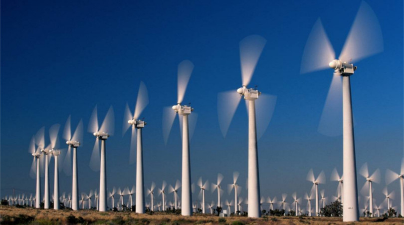

Aplikasi Rotasi
Rotasi atau perputaran sangat erat kaitannya dengan lingkungan sekitar kita, mulai dari bumi yang kita pijaki yang berputar mengelilingi sumbu rotasi terhadap matahari.
Rotasi juga merupakan sumber dari terciptanya suatu alat yang sangat mempermudah kehidupan manusia, yaitu turbin angina atau istilah sederhananya kita kenal dengan kincir angin.
Baling-baling yang digunakan berfungsi seperti sayap pesawat udara. Ketika angin bertiup melalui baling-baling tersebut, maka akan timbul udara bertekanan rendah di bagian bawah dari balingbaling, Tekanan udara yang rendah akan menarik baling-baling bergerak ke area tersebut. Gaya yang ditimbulkan dinamakan gaya angkat. Besarnya gaya angkat biasanya lebih kuat dari gaya tarik. Kombinasi antara gaya angkat dan gaya tarik menyebabkan rotor berputar seperti propeler dan memutar generator. Turbin angin bisa digunakan secara stand-alone, atau bisa dihubungkan ke jaringan transmisi. Manfaat turbin angin diantaranya adalah untuk membangkitkan listrik yang bersih dan baik untuk penerangan.